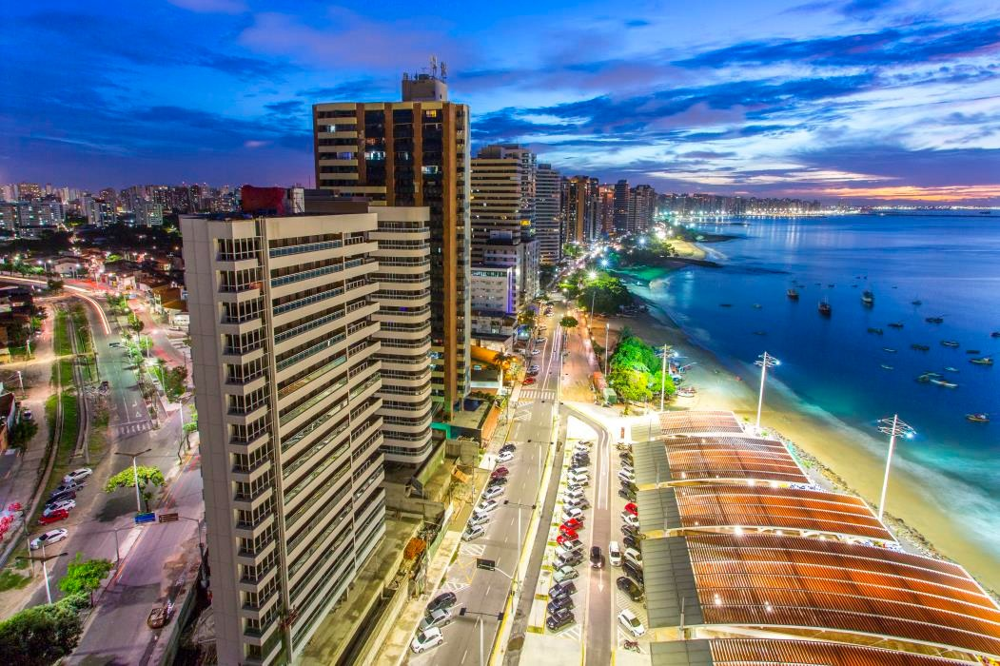

15 de agosto de 1990
De onde eu venho...

Sou natural da cidade de Fortaleza - CEARÁ, que está lozalizada na Região do Nordeste do Brasil,
mais
conhecida
como Terra do Sol. Terra de vários artistas cearenses como Belchior, Chico Anysio, José de
Alencar,
Rachel de
Queiros e muitos outros. Uma das cidades mais bela do país, com lindas praias, e uma cultura
muito
forte.